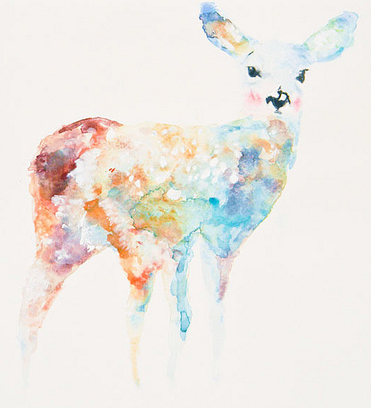

你知道你记得我
你知道你记得我
我不知道你是否记得我，只有你知道。
其实外表越是自信的人，心里越是自卑。一如放浪形骸只是对现实无奈的某种抗争罢了。在我心里，冷漠与依恋﹑冷静与疯狂像漩涡般搅割着。我脸上写的，不过是习以为常的表情形式。我其实非常在乎你记得我，但是我却从来不会问你。
因为只有你知道，你记得我么？
你说的话，我听了，却没有去记。因为我不想在那春雾迷蒙的氛围里，如秋风扫叶般去分辨哪些是枯萎，去思考那种是果实。还不如我们只是对酒当歌，言笑晏晏。一切留给时间和距离。
时间在奋斗与麻木中﹑在沉迷与抛弃中流逝，你，还记得我么？那些两个人天天必须的纠缠，要么是感情冲昏了头脑，要么是有所求尚未满足，要么是不信任高到一定程度。每个人都有各自除了在一起以外的生活，这反而才显得相处的快乐。我痛恨不理智的行为，因为那并不代表你记得我。
相识总在分隔后。距离的魔力，让你抉择是让我成为岁月的过客，还是更加的认识我，记得我。人生苦短，你忘记了很多相处过的人，可能包括我。这正是在一起时无法体现的，无法思考和超越的变化。在距离产生后，却存留下来的：你记得我。才是值得珍惜，值得呵护的记得，才是超越外表，超越价值的，纯粹的只是关于我这个人的记得。
可是真的做到的有几个？只有你知道。
也许是我执念太深了。
其实我要的很少很少。我只需要你偶尔想起我。也许你会顽固的保留我尚且幼稚的笔迹，也许你会存着我自己都觉得难看的照片，也许你会和新朋友坦然的讲述我们的故事，也许你会偶尔的摆弄我送你的傻气的礼物，也许你会在下雨时想起一起路过的那家书店，也许你只是无意中梦见过往岁月关于我的残缺的碎片，也许，也许。。。 。。。这些，哪怕只有一点尚存，哪怕只有一点让我发现，哪怕只是在我一厢情愿的揣测后你却做到了！我都会记得你一辈子记得你。哪怕普罗米休斯无法盗来火种，我也愿意让自己的灵魂熊熊燃烧，照亮你的前路！
但是只有你知道，你记得我么？
Blog Archive
-
▼2011
-
▼2010